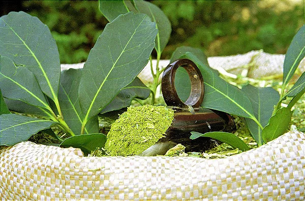
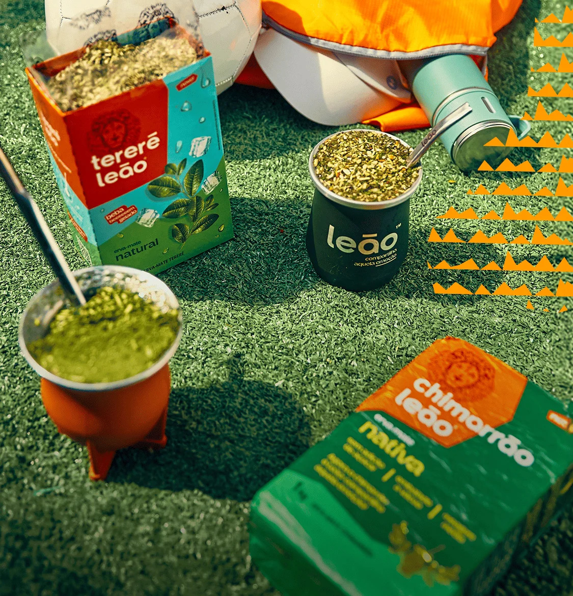
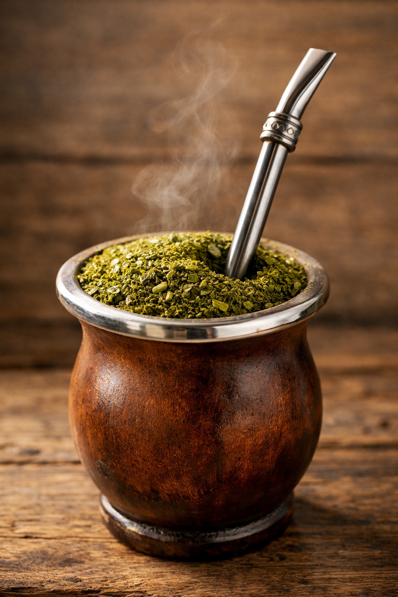
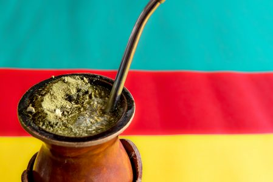
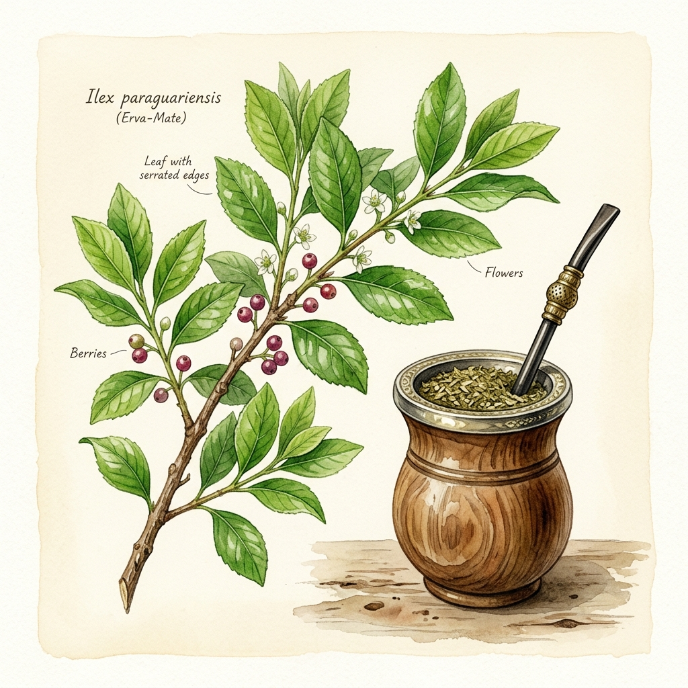
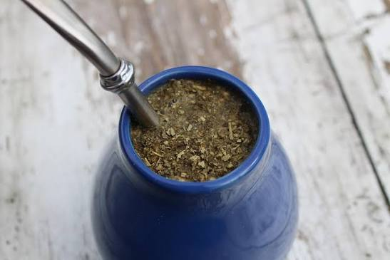
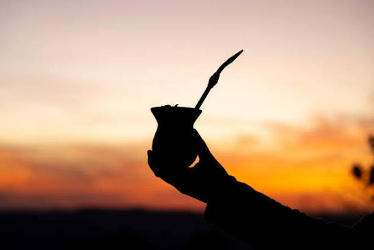

SEJAM BEM VINDOS AO MEU SITE!
Curiosiades sobre a cultura da erva mate

CONTEXTO HITÓRICO
Os índios Guaranis e Quechuas foram os primeiros a usar a planta como alimento, remédio e bebida sagrada. Com a chegada dos espanhóis e portugueses, o hábito passou para os colonos e virou motor econômico no sul do Brasil, especialmente no Paraná.

IMPORTÂNCIA CULTURAL
A erva-mate (Ilex paraguariensis) é um símbolo vivo da identidade sul-americana. Ela une povos indígenas originários (como Guaranis e Kaingangs), comunidades quilombolas e agricultores familiares por meio de rituais de convivência, manejo sustentável da terra e reconhecimento patrimonial oficial. Ela é símbolo da cultura paranaense, principalmente por meio do chimarrão, que representa convivência e hospitalidade.

Curiosidades
Curiosidade 1
A erva-mate (Ilex paraguariensis) é uma árvore nativa da América do Sul cujo nome científico significa "aprazível do Paraguai". Usada primeiro pelos índios Guaranis, ela gerou ciclos econômicos no Brasil, virou símbolo de união no chimarrão e no tererê, e guarda fatos muito curiosos sobre sua história e seu preparo.
Curiosidade 2
Droga do demônio: No século XVII, os padres jesuítas proibiram o consumo da erva-mate no início da colonização. Eles a chamavam de "erva do diabo" porque achavam que o vigor físico e a alegria que ela dava aos índios eram feitiçaria.
Memória e Propriedades
Vou compartilhar imagens em memória das propriedades nas quais a erva-mate vivia antigamente



